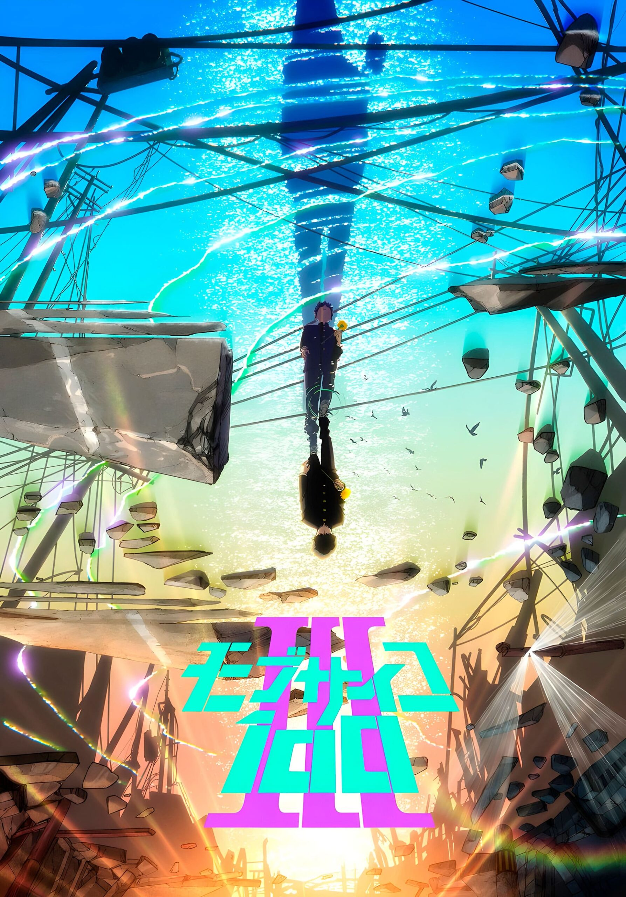

El anime Mob Psycho 100 lanza un nuevo visual para su tercera temporada
A través del sitio web oficial para la adaptación al anime del manga escrito e ilustrado por ONE, Mob Psycho 100, se publicó un nueva imagen promocional para la tercera temporada del proyecto ilustrada por el diseñador de personajes Yoshimichi Kameda. Además, se anunció que el tema de apertura para esta secuela se titulará “ONE” y será interpretado por el grupo Mob Choir.
ONE publicó el manga original a través de la revista Ura Sunday de la editorial Shogakukan entre abril de 2012 y diciembre de 2017, recopilando la obra en un total de dieciséis volúmenes. La adaptación animada de doce episodios fue producida por los estudios BONES, bajo la dirección de Yuzuru Tachikawa y guiones escritos por Hiroshi Seko, estrenada en julio de 2016. Una segunda temporada de trece episodios contó con el mismo equipo de producción y fue estrenada en enero de 2019.
Sinopsis de Mob Psycho 100
Shigeo “Mob” Kageyama, estudiante de octavo grado, ha aprovechado su fuente interna de destreza psíquica a una edad temprana. Pero el poder rápidamente demuestra ser un lastre cuando se da cuenta del peligro potencial en sus habilidades. Al elegir suprimir su poder, el único uso actual de Mob para su habilidad es impresionar a su enamorada de toda la vida, Tsubomi, quien pronto se aburre de los mismos trucos.
Para ejercer control sobre sus habilidades, Mob se alista bajo el ala de Arataka Reigen, un estafador que dice ser un psíquico, que explota los poderes de Mob para el cambio de bolsillo. Ahora, exorcizar a los espíritus malignos por orden se ha convertido en parte de la vida diaria y monótona de Mob. Sin embargo, la energía psíquica que ejerce es apenas la punta del iceberg; Si su vasto potencial y sus emociones desenfrenadas se vuelven locas, se desencadenará un evento cataclísmico que lo volvería completamente irreconocible. La progresión hacia la explosión de Mob está aumentando e intentar detenerla es inútil.